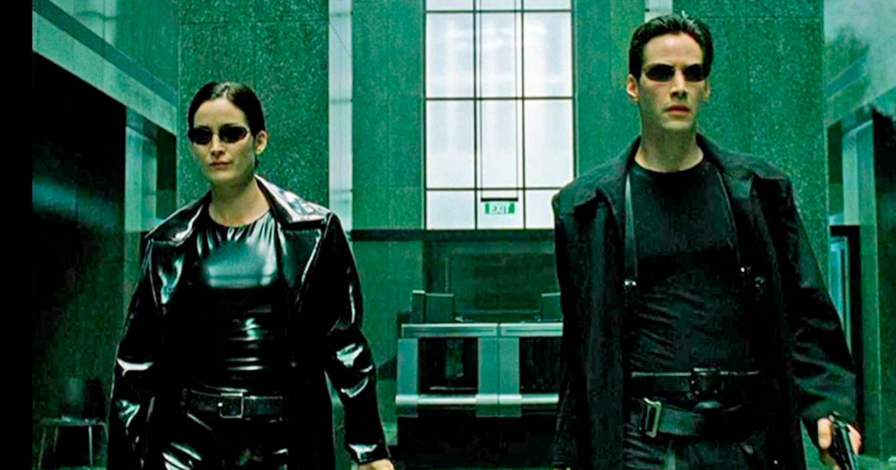
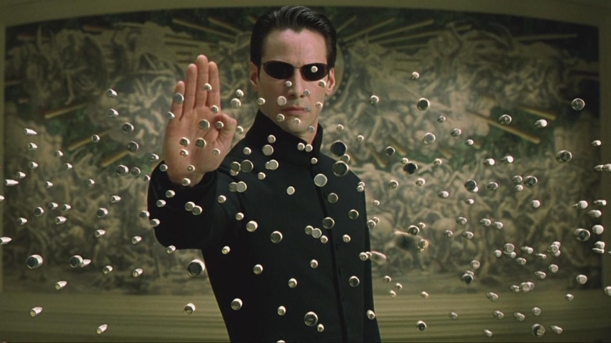
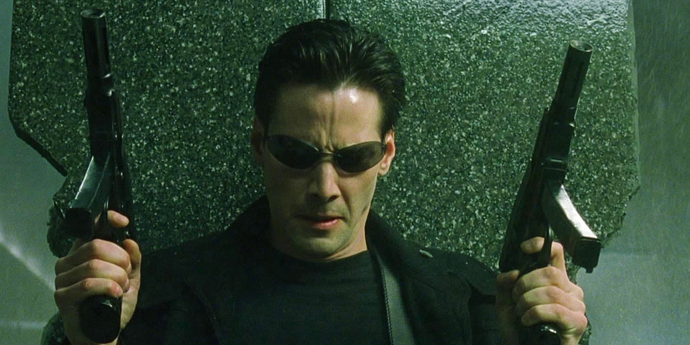

Um dos nomes de maior hype no cinema e na cultura pop, mas será que ele realmente faz jus a toda essa glória? Honestamente, eu devo ter sido uma das últimas pessoas deste século a não ter a menor ideia do que era Matrix. A única imagem que me vinha à cabeça era a clássica cena em slow motion dos personagens se esquivando de balas. Porém, ao ver a obra na íntegra, percebi que é muito mais que isso. Já adianto: é uma experiência que vale muito a pena.

Sobre o conceito da Matrix em si, não tenho certeza se algo similar já havia sido apresentado antes, mas a existência de um universo simulado à parte do real é uma ideia fantástica. Já vi propostas parecidas em obras específicas, como The Flash e Agents of S.H.I.E.L.D., mas saber que Matrix foi o responsável por abrir as portas para esse conceito na cultura pop é digno de aplausos. Quem diria que, lá em 1999, a Inteligência Artificial já era vista como uma inimiga tão formidável? Fico pensando o que a resistência acharia se pudesse ver os avanços tecnológicos dos tempos atuais.



"Em 1999, Matrix nos alertou sobre o poder das máquinas e da simulação. Hoje, cercados por I.A.s e realidades digitais, o filme deixa de ser apenas uma ficção para se tornar um espelho desconfortável do nosso próprio presente."
Como nem tudo é perfeito ,nem mesmo o "mundo real" do filme , algumas cenas de luta corporal acabaram me tirando algumas risadas involuntárias. Por outro lado, as demais sequências de ação são dignas de um grande filme, com uma direção excelente para os momentos de supervelocidade. Então, o que você está esperando para escolher entre a pílula azul e a vermelha e descobrir por conta própria o que acha de Matrix? Garanto que o conceito é fascinante. Algumas conexões entre o mundo real e a simulação podem parecer um pouco bagunçadas no início, mas hey, o que é uma pequena confusão mental perto do poder de se esquivar de balas?
✔ O QUE É BOM
- Conceito Revolucionário
- Temática Atemporal
- Direção Estilizada
✖ O QUE NÃO É BOM
- Coreografias Datadas
- Exposição Confusa
Discussão e Opiniões